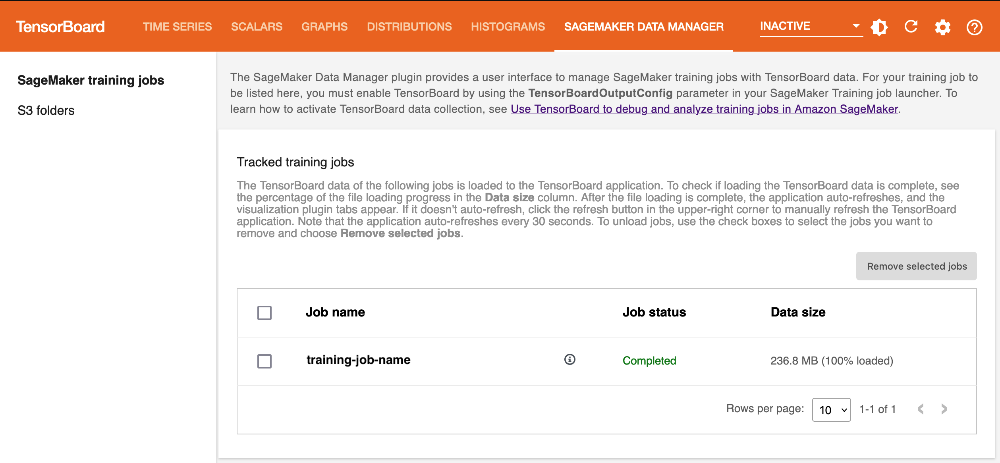

Use TensorBoard to debug and analyze training jobs in Amazon SageMaker
Amazon SageMaker with TensorBoard is a capability of Amazon SageMaker that brings the visualization tools
of TensorBoard
Note
This feature is for training and debugging deep learning models using the PyTorch or TensorFlow framework.
For data scientists
Training large models can have scientific problems that require data scientists to debug and resolve them in order to improve model convergence and stabilize gradient descent processes.
When you encounter model training issues, such as loss not converging, or vanishing or exploding weights and gradients, you need to access tensor data to dive deep and analyze the model parameters, scalars, and any custom metrics. Using SageMaker with TensorBoard, you can visualize model output tensors extracted from training jobs. As you experiment with different models, multiple training runs, and model hyperparameters, you can select multiple training jobs in TensorBoard and compare them in one place.
For administrators
Through the TensorBoard landing page in the SageMaker console or SageMaker Domain, you can manage TensorBoard application users if you are an administrator of an AWS account or SageMaker Domain. Each Domain user can access their own TensorBoard application given the granted permissions. As a SageMaker Domain administrator and Domain user, you can create and delete the TensorBoard application given the permission level you have.
Supported frameworks and AWS Regions
This feature supports the following machine learning frameworks and AWS Regions.
Frameworks
-
PyTorch
-
TensorFlow
-
Hugging Face Transformers
AWS Regions
-
US East (N. Virginia) (
us-east-1) -
US East (Ohio) (
us-east-2) -
US West (Oregon) (
us-west-2) -
Europe (Frankfurt) (
eu-central-1) -
Europe (Ireland) (
eu-west-1)
Note
Amazon SageMaker with TensorBoard runs the TensorBoard application on an
ml.r5.large instance and incurs charges after the SageMaker free tier or the
free trial period of the feature. For more information, see Amazon SageMaker
Pricing
Prerequisites
The following list shows the prerequisites to start using SageMaker with TensorBoard.
-
A SageMaker Domain that's set up with Amazon VPC in your AWS account.
For instructions on setting up a Domain, see Onboard to Amazon SageMaker Domain using quick setup. You also need to add Domain user profiles for individual users to access the TensorBoard on SageMaker. For more information, see Add and remove SageMaker Domain user profiles.
-
The following list is the minimum set of permissions for using TensorBoard on SageMaker.
-
sagemaker:CreateApp -
sagemaker:DeleteApp -
sagemaker:DescribeTrainingJob -
sagemaker:Search -
s3:GetObject -
s3:ListBucket
-
Prepare a training job with a TensorBoard output data configuration
A typical training job for deep learning in SageMaker consists of two main steps: preparing a training script and configuring a SageMaker Training job launcher. In this section, you can check the required changes to collect TensorBoard-compatible data from SageMaker Training.
Step 1: Modify your training script
Make sure you determine which output tensors and scalars to collect, and modify code lines in your training script using any of the following tools: TensorBoardX, TensorFlow Summary Writer, PyTorch Summary Writer, or SageMaker Debugger.
Also make sure that you specify the TensorBoard data output path as the log
directory (log_dir) for callback in the training container.
For more information about callbacks per framework, see the following resources.
-
For PyTorch, use torch.utils.tensorboard.SummaryWriter
. See also the Using TensorBoard in PyTorch and Log scalars sections in the PyTorch tutorials. Alternatively, you can use TensorBoardX Summary Writer . LOG_DIR="/opt/ml/output/tensorboard" tensorboard_callback=torch.utils.tensorboard.writer.SummaryWriter(log_dir=LOG_DIR) -
For TensorFlow, use the native callback for TensorBoard, tf.keras.callbacks.TensorBoard
. LOG_DIR="/opt/ml/output/tensorboard" tensorboard_callback=tf.keras.callbacks.TensorBoard( log_dir=LOG_DIR, histogram_freq=1) -
For Transformers with PyTorch, you can use transformers.integrations.TensorBoardCallback
. For Transformers with TensorFlow, use the
tf.keras.tensorboard.callback, and pass that to the keras callback in transformers.Tip
You can also use a different container local output path. However, in Step 2: Construct a SageMaker training launcher with TensorBoard data configuration, you must map the paths correctly for SageMaker to successfully search the local path and save the TensorBoard data to the S3 output bucket.
-
For guidance on modifying training scripts using the SageMaker Debugger Python library, see Step 1: Adapt Your Training Script to Register a Hook.
Step 2: Construct a SageMaker training launcher with TensorBoard data configuration
Use the sagemaker.debugger.TensorBoardOutputConfig while configuring
a SageMaker framework estimator. This configuration API maps the S3 bucket you specify
for saving TensorBoard data with the local path in the training container
(/opt/ml/output/tensorboard). Pass the object of the module to the
tensorboard_output_config parameter of the estimator class. The
following code snippet shows an example of preparing a TensorFlow estimator with the
TensorBoard output configuration parameter.
Note
This example assumes that you use the SageMaker Python SDK. If you use the low-level SageMaker API, you should include the following to the request syntax of the CreateTrainingJob API.
"TensorBoardOutputConfig": { "LocalPath": "/opt/ml/output/tensorboard", "S3OutputPath": "s3_output_bucket" }
from sagemaker.tensorflow import TensorFlow from sagemaker.debugger import TensorBoardOutputConfig # Set variables for training job information, # such as s3_out_bucket and other unique tags. ... LOG_DIR="/opt/ml/output/tensorboard" output_path = os.path.join( "s3_output_bucket", "sagemaker-output", "date_str", "your-training_job_name" ) tensorboard_output_config = TensorBoardOutputConfig( s3_output_path=os.path.join(output_path, 'tensorboard'), container_local_output_path=LOG_DIR ) estimator = TensorFlow( entry_point="train.py", source_dir="src", role=role, image_uri=image_uri, instance_count=1, instance_type="ml.c5.xlarge", base_job_name="your-training_job_name", tensorboard_output_config=tensorboard_output_config, hyperparameters=hyperparameters)
How to access TensorBoard on SageMaker
You can access TensorBoard by two methods: programmatically using the
sagemaker.interactive_apps.tensorboard module that generates an
unsigned or a presigned URL, or using the TensorBoard landing page in the SageMaker console.
After you open TensorBoard, SageMaker runs the TensorBoard plugin and automatically finds all
training job output data in TensorBoard-compatible file format.
Topics
Open TensorBoard using the
sagemaker.interactive_apps.tensorboard module
The sagemaker.interactive_apps.tensorboard module provides a function
called get_app_url that generates unsigned or presigned URLs to open
the TensorBoard application in any environment in SageMaker or Amazon EC2. This is to provide
a unified experience for both Studio and non-Studio users. For the Studio
environment, you can open TensorBoard by running the get_app_url()
function as it is, or you can also specify a job name to start tracking as the
TensorBoard application opens. For non-Studio environments, you can open TensorBoard
by providing your Domain and user profile information to the utility function.
With this functionality, regardless of where or how you run training code and launch
training jobs, you can directly access TensorBoard by running the
get_app_url function in your Jupyter notebook or terminal.
Note
This functionality is available in the SageMaker Python SDK v2.184.0 and later. To
use this functionality, make sure that you upgrade the SDK by running pip
install sagemaker --upgrade.
Option 1: For SageMaker Studio
If you are using SageMaker Studio, you can directly open the TensorBoard
application or retrieve an unsigned URL by running the get_app_url
function as follows. As you are already within the Studio environment and
signed in as a Domain user, get_app_url() generates unsigned
URL because it is not necessary to authenticate again.
To open the TensorBoard application
The following code automatically opens the TensorBoard application from the
unsigned URL that the get_app_url() function returns in the your
environment's default web browser.
from sagemaker.interactive_apps import tensorboard region = "us-west-2" app = tensorboard.TensorBoardApp(region) app.get_app_url( training_job_name="your-training_job_name" # Optional. Specify the job name to track a specific training job )
To retrieve an unsigned URL and open the TensorBoard application manually
The following code prints an unsigned URL that you can copy to a web browser and open the TensorBoard application.
from sagemaker.interactive_apps import tensorboard region = "us-west-2" app = tensorboard.TensorBoardApp(region) print("Navigate to the following URL:") print( app.get_app_url( training_job_name="your-training_job_name", # Optional. Specify the name of the job to track. open_in_default_web_browser=False# Set to False to print the URL to terminal. ) )
Note that if you run the preceding two code samples outside the SageMaker Studio environment, the function will return a URL to the TensorBoard landing page in the SageMaker console, because these do not have sign-in information to your Domain and user profile. For creating a presigned URL, see Option 2 in the following section.
Option 2: For non-Studio environments
If you use non-Studio environments, such as SageMaker Notebook instance or
Amazon EC2, and want to open TensorBoard directly from the environment you are in,
you need to generate a URL presigned with your Domain and user profile
information. A presigned URL is a URL that's signed in to
Amazon SageMaker Studio while the URL is being created with your Domain and user
profile, and therefore granted access to all of the Domain applications and
files associated with your Domain. To open TensorBoard through a presigned
URL, use the get_app_url function with your Domain and user
profile name as follows.
Note that this option requires the Domain user to have the
sagemaker:CreatePresignedDomainUrl permission. Without the
permission, the Domain user will receive an exception error.
Important
Do not share any presigned URLs. The get_app_url function
creates presigned URLs, which automatically authenticates with your
Domain and user profile and gives access to any applications and files
associated with your Domain.
print( app.get_app_url( training_job_name="your-training_job_name", # Optional. Specify the name of the job to track. create_presigned_domain_url=True, # Reguired to be set to True for creating a presigned URL. domain_id="your-domain-id", # Required if creating a presigned URL (create_presigned_domain_url=True). user_profile_name="your-user-profile-name", # Required if creating a presigned URL (create_presigned_domain_url=True). open_in_default_web_browser=False, # Optional. Set to False to print the URL to terminal. optional_create_presigned_url_kwargs={} # Optional. Add any additional args for Boto3 create_presigned_domain_url ) )
Tip
The get_app_url function runs the SageMaker.Client.create_presigned_domain_urlcreate_presigned_domain_url API creates presigned domain URLs
that expire in 300 seconds by default, presigned TensorBoard application URLs
also expire in 300 seconds. If you want to extend the expiration time, pass the
ExpiresInSeconds argument to the
optional_create_presigned_url_kwargs argument of the
get_app_url function as follows.
optional_create_presigned_url_kwargs={"ExpiresInSeconds":1500}
Note
If any of your input passed to the arguments of get_app_url is
invalid, the function outputs a URL to the TensorBoard landing page instead of
opening the TensorBoard application. The output message would be similar to the
following.
Navigate to the following URL: https://us-west-2.console.aws.amazon.com/sagemaker/home?region=us-west-2#/tensor-board-landing
Open TensorBoard using
the get_app_url function as an estimator class method
If you are in the process of running a training job using the
estimator class of the SageMaker Python SDK and have an active object of
the estimator class, you can also access the get_app_url function as a class methodestimator class. Open the TensorBoard application or retrieve an
unsigned URL by running the get_app_url method as follows. The
get_app_url class method pulls the training job name from the
estimator and opens the TensorBoard application with the specified job.
Note
This functionality is available in the SageMaker Python SDK v2.184.0 and later. To
use this functionality, make sure that you upgrade the SDK by running pip
install sagemaker --upgrade.
Option 1: For SageMaker Studio
To open the TensorBoard application
The following code automatically opens the TensorBoard application from the
unsigned URL that the get_app_url() method returns in the your
environment's default web browser.
estimator.get_app_url( app_type=SupportedInteractiveAppTypes.TENSORBOARD # Required. )
To retrieve an unsigned URL and open the TensorBoard application manually
The following code prints an unsigned URL that you can copy to a web browser and open the TensorBoard application.
print( estimator.get_app_url( app_type=SupportedInteractiveAppTypes.TENSORBOARD, # Required. open_in_default_web_browser=False, # Optional. Set to False to print the URL to terminal. ) )
Note that if you run the preceding two code samples outside the SageMaker Studio environment, the function will return a URL to the TensorBoard landing page in the SageMaker console, because these do not have sign-in information to your Domain and user profile. For creating a presigned URL, see Option 2 in the following section.
Option 2: For non-Studio environments
If you use non-Studio environments, such as SageMaker Notebook instance and
Amazon EC2, and want to generate a presigned URL to open the TensorBoard application,
use the get_app_url method with your Domain and user profile
information as follows.
Note that this option requires the Domain user to have the
sagemaker:CreatePresignedDomainUrl permission. Without the
permission, the Domain user will receive an exception error.
Important
Do not share any presigned URLs. The get_app_url function
creates presigned URLs, which automatically authenticates with your
Domain and user profile and gives access to any applications and files
associated with your Domain.
print( estimator.get_app_url( app_type=SupportedInteractiveAppTypes.TENSORBOARD, # Required create_presigned_domain_url=True, # Reguired to be set to True for creating a presigned URL. domain_id="your-domain-id", # Required if creating a presigned URL (create_presigned_domain_url=True). user_profile_name="your-user-profile-name", # Required if creating a presigned URL (create_presigned_domain_url=True). open_in_default_web_browser=False, # Optional. Set to False to print the URL to terminal. optional_create_presigned_url_kwargs={} # Optional. Add any additional args for Boto3 create_presigned_domain_url ) )
Open TensorBoard through the SageMaker console
You can also use the SageMaker console UI to open the TensorBoard application. There are two options to open the TensorBoard application through the SageMaker console.
Topics
Option 1: Launch TensorBoard from the Domain details page
Navigate to the Domain details page
The following procedure shows how to navigate to the Domain details page.
-
Open the Amazon SageMaker console at https://console.aws.amazon.com/sagemaker/
. -
On the left navigation pane, choose Admin configurations.
-
Under Admin configurations, choose Domains.
-
From the list of Domains, select the Domain in which you want to launch the TensorBoard application.
Launch a user profile application
The following procedure shows how to launch a Studio application that is scoped to a user profile.
-
On the Domain details page, choose the User profiles tab.
-
Identify the user profile for which you want to launch the Studio application.
-
Choose Launch for your selected user profile, then choose TensorBoard.
Option 2: Launch TensorBoard from the TensorBoard landing page
The following procedure describes how to launch a TensorBoard application from the TensorBoard landing page.
-
Open the Amazon SageMaker console at https://console.aws.amazon.com/sagemaker/
. -
On the left navigation pane, choose TensorBoard.
-
Under Get started, select the Domain in which you want to launch the Studio application. If your user profile only belongs to one Domain, you do not see the option for selecting a Domain.
-
Select the user profile for which you want to launch the Studio application. If there is no user profile in the Domain, choose Create user profile. For more information, see Add and Remove User Profiles.
-
Choose Open TensorBoard.
The following screenshot shows the location of TensorBoard in the left navigation pane of the SageMaker console and the SageMaker with TensorBoard landing page in the main pane.
Access and visualize training output data in TensorBoard
You can conduct an online or offline analysis by loading collected output tensors from S3 buckets paired with training jobs during or after training.
When you open the TensorBoard application, TensorBoard opens with the SageMaker Data Manager tab. The following screenshot shows the full view of the SageMaker Data Manager tab in the TensorBoard application.

In the SageMaker Data Manager tab, you can select any training job and load TensorBoard-compatible training output data from Amazon S3.
-
In the Search training jobs section, use the filters to narrow down the list of training jobs you want to find, load, and visualize.
-
In the List of training jobs section, use the check boxes to choose training jobs from which you want to pull data and visualize for debugging.
-
Choose Add selected jobs. The selected jobs should appear in the Tracked training jobs section, as shown in the following screenshot.

Note
The SageMaker Data Manager tab only shows training jobs configured
with the TensorBoardOutputConfig parameter. Make sure you have
configured the SageMaker estimator with this parameter. For more information, see Step 2: Construct a SageMaker
training launcher with TensorBoard data configuration.
Note
The visualization tabs might not appear if you are using SageMaker with TensorBoard for the first time or no data is loaded from a previous use. After adding training jobs and waiting for a few seconds, refresh the viewer by choosing the clockwise circular arrow on the upper-right corner. The visualization tabs should appear after the job data are successfully loaded. You can also set to auto-refresh using the Settings button next to the refresh button in the upper right corner.
Explore training output data visualized in TensorBoard
In the graphics tabs, you can see the list of the loaded training jobs in the left pane. You can also use the check boxes of the training jobs to show or hide visualizations. The TensorBoard dynamic plugins are activated dynamically depending on how you have set your training script to include summary writers and pass callbacks for tensor and scalar collection, and therefore the graphics tabs also appear dynamically. The following screenshots show example views of each tab with visualization of two training jobs that collected metrics for time series, scalar, graph, distribution, and histogram plugins.
The TIME SERIES tab view
The SCALARS tab view
The GRAPHS tab view
The DISTRIBUTIONS tab view
The HISTOGRAMS tab view
Delete unused TensorBoard applications
After you are done with monitoring and experimenting with jobs in TensorBoard, shut the TensorBoard application down.
-
Open the SageMaker console.
-
On the left navigation pane, choose Admin configurations.
-
Under Admin configurations, choose Domains.
-
Choose your domain.
-
Choose your user profile.
-
Under Apps, choose Delete App for the TensorBoard row.
-
Choose Yes, delete app.
-
Type
deletein the text box, then choose Delete. -
A blue message should appear at the top of the screen: default is being deleted.
Considerations
Consider the following when using SageMaker with TensorBoard.
-
You cannot share the TensorBoard applications for collaboration purposes because SageMaker Domain does not allow application sharing among users. Users can share the output tensors saved in an S3 bucket, if they have access to the bucket.
-
The visualization plugins might not appear when you first launch the TensorBoard application. After you select training jobs in the SageMaker Data Manager plugin, the TensorBoard application loads the TensorBoard data and populates the visualization plugins.
-
The TensorBoard applications automatically shuts down after 1 hour of inactivity. If you want to shut the application down when you are done using it, make sure to manually shut down TensorBoard to avoid paying for the instance hosting it. For instructions on deleting the application, see Delete unused TensorBoard applications.